À l'orée du fer - Artisan ferronnier à Limoges
A l'Orée du Fer
Atelier de ferronnerie spécialisé
Architecture intérieur et extérieur
Découvrez des créations uniques faites à la main avec passion.
Découvrir →A l'Orée du Fer
Pièces de décoration, Mobilier sur-mesure en métal
Bienvenue dans notre atelier
Un savoir faire ancestral au service de vos projets.
Voir la collection →A l'Orée du Fer
Arisant créateur en serrurerie d'art
Concevoir des créations contemporaines dans le respect des techniques ancestrales
Contactez nous pour un devis personnaliser.
Nous contacter →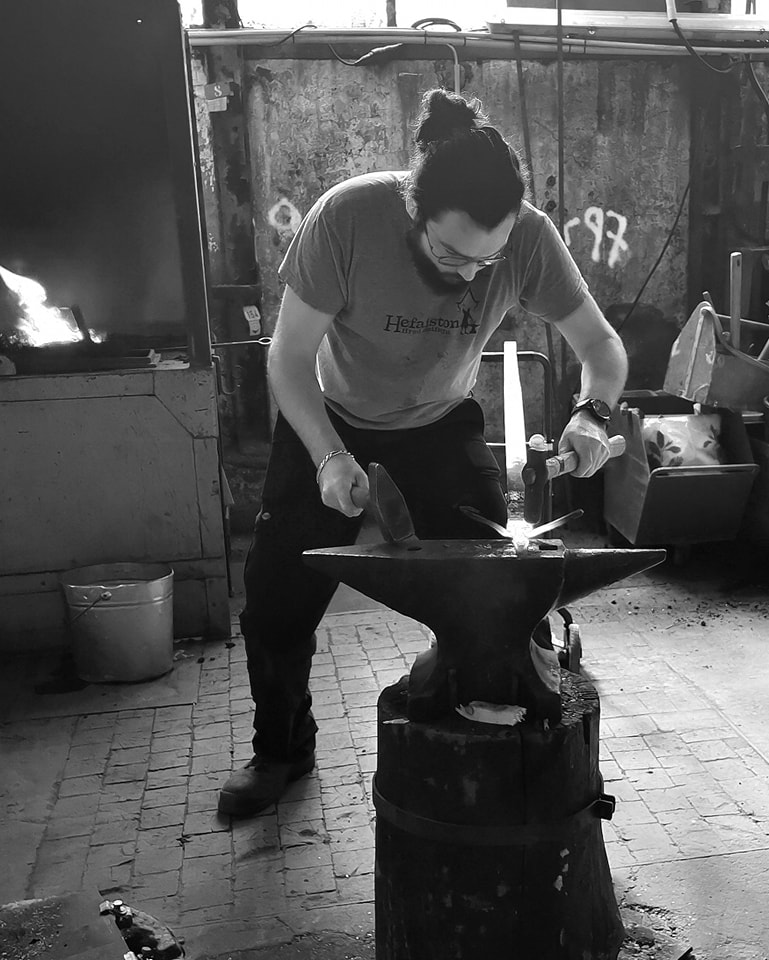
LA FERRONNERIE D'ART
La Ferronnerie d'Art est l'art et la technique du travail du fer à la forge, à l'étampe ou au marteau dans un but décoratif et/ou architectural. C'est un savoir-faire ancestral qui permet d'imaginer, de créer et de concevoir des ferronneries : escaliers, rampes de style, grilles et portails, mobilier, gardecorps, structures métalliques, marquises... Elle nécessite un grand savoir-faire et de nombreuses années d'expérience.
Une prise en charge globale : de la conception à la pose
Mon travail en 4 étapes au service de vos envies :
❈ Etape 1 : Tout commence par un premier rendez-vous afin d'écouter, comprendre et cerner les souhaits de mes clients. Dans le but d'établir un devis au plus juste. Devis que je présente en personne, car il s'accompagne en général d'explication esthétique et technique, ainsi que d'échantillons pour m'assurer que nous nous comprenons.
❈ Etape 2 : Après acceptation du devis, commence la phase de création et de conception. Je propose une esthétique que nous affinons ensemble pour être au plus près de vos attentes.
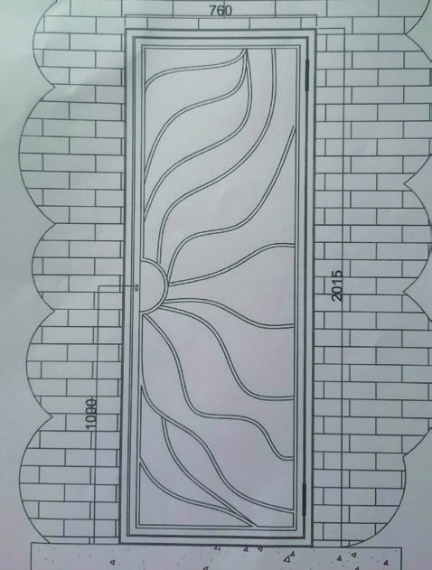

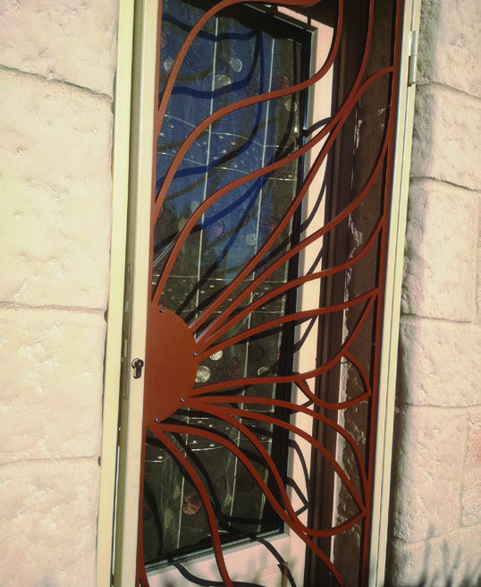
❈ Etape 3 : Une fois validé par vos soins, vient le moment de la fabrication dans le respect des règles techniques. Le dessin prend vie et passe de l'imaginaire au réel.
❈ Etape 4 : Pour finir, je me charge en personne de l'installation sur site. Vous découvrez alors votre ouvrage tel que vous l'avez imaginé en lieu et place.
Les matériaux
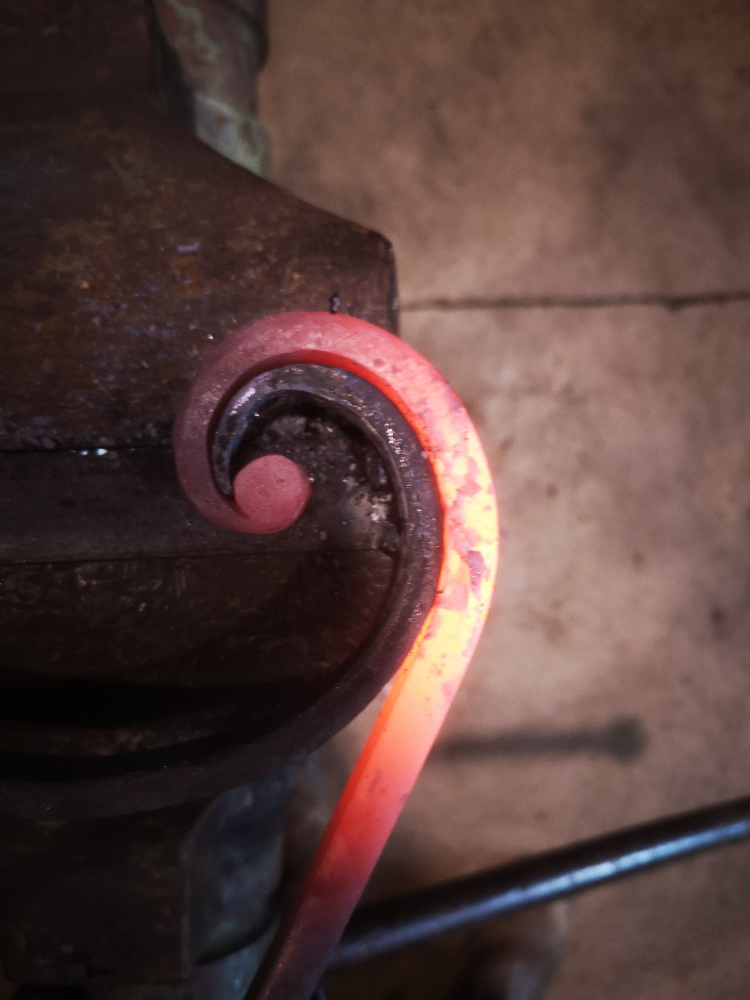
Le ferronnier d'art est connu pour ses ouvrages en fer mais en fonction du rendu recherché il pourra travailler également d'autres matériaux :
- • La feuille d'or
- • Le bronze (alliance étain et cuivre)
- • L'acier (alliance fer et carbone)
- • Les aciers inoxydables
- • Les métaux non ferreux (cuivre, aluminium, laiton)
- • Le plomb
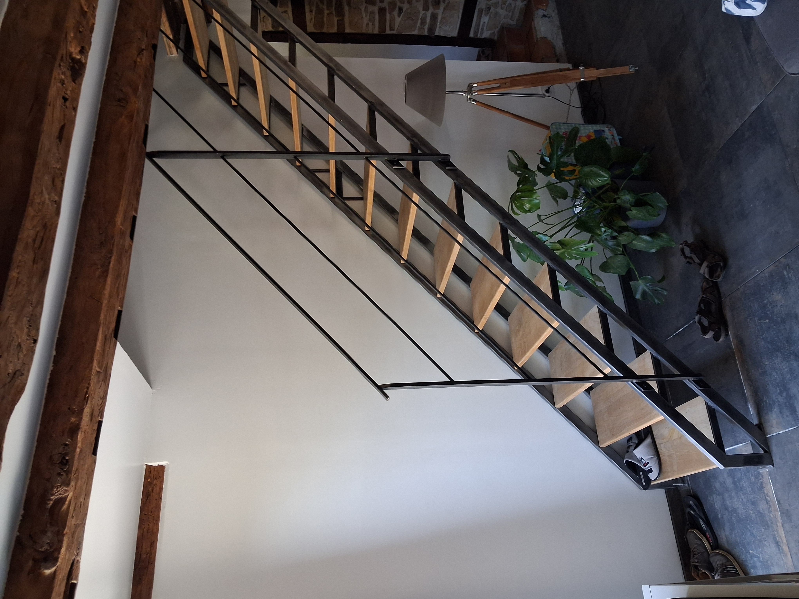
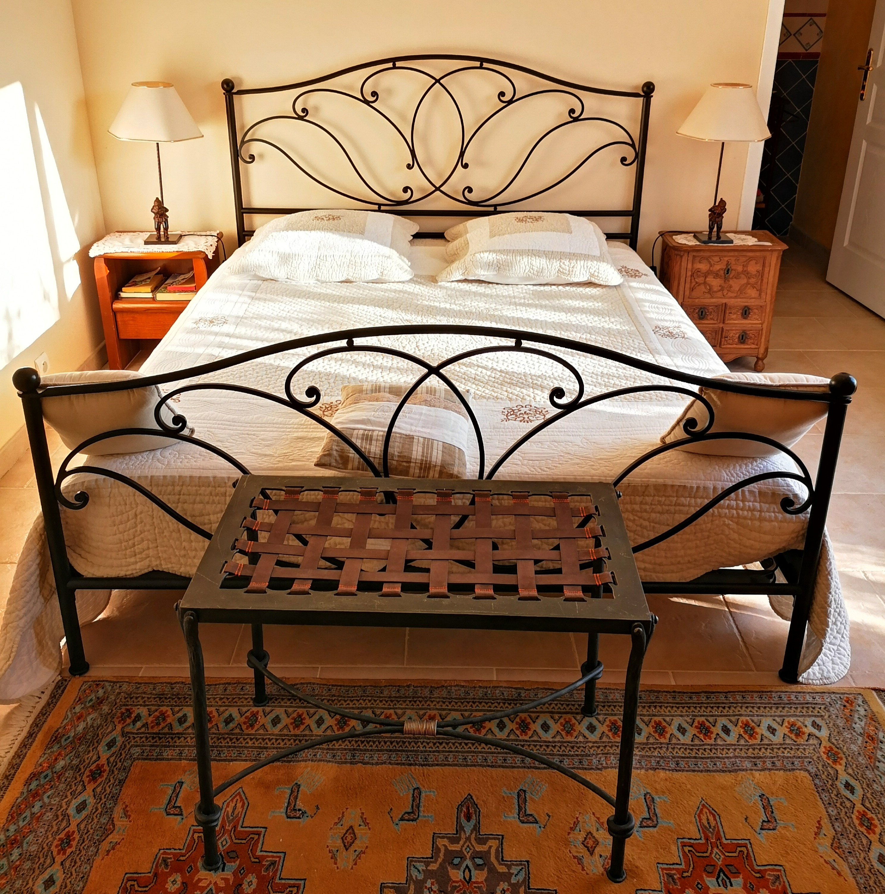
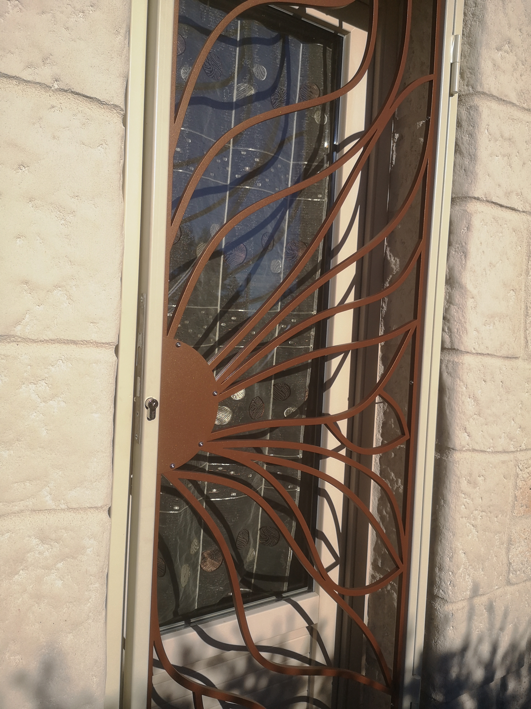
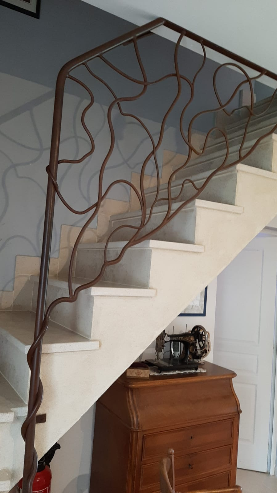
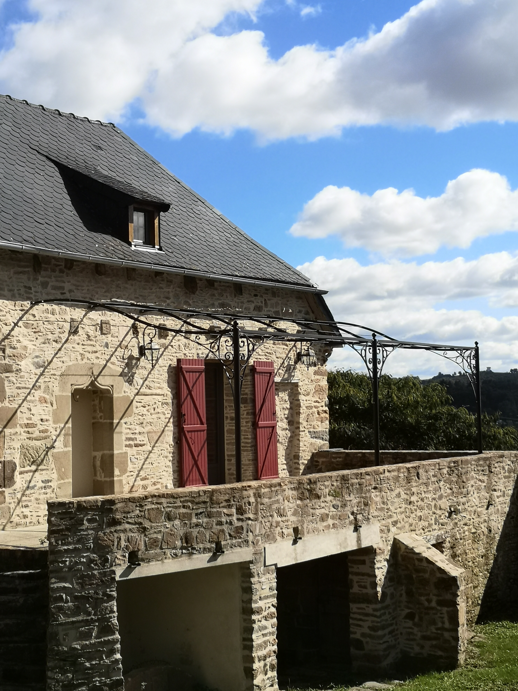
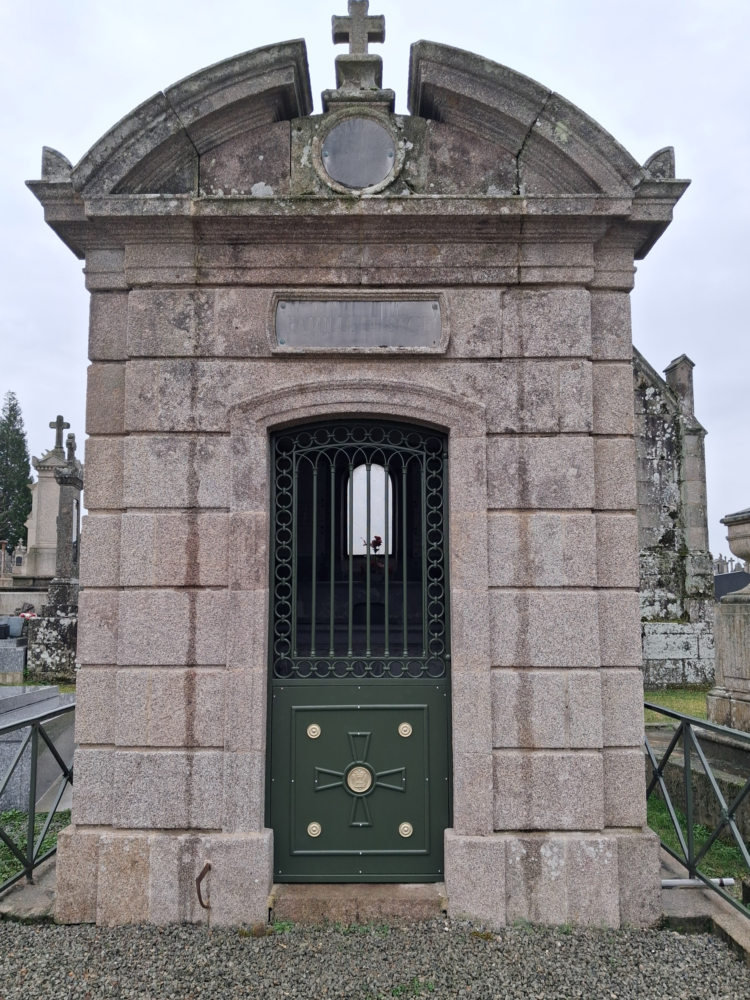
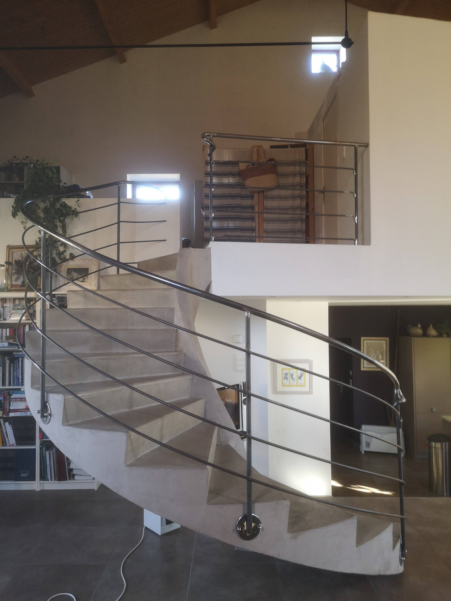